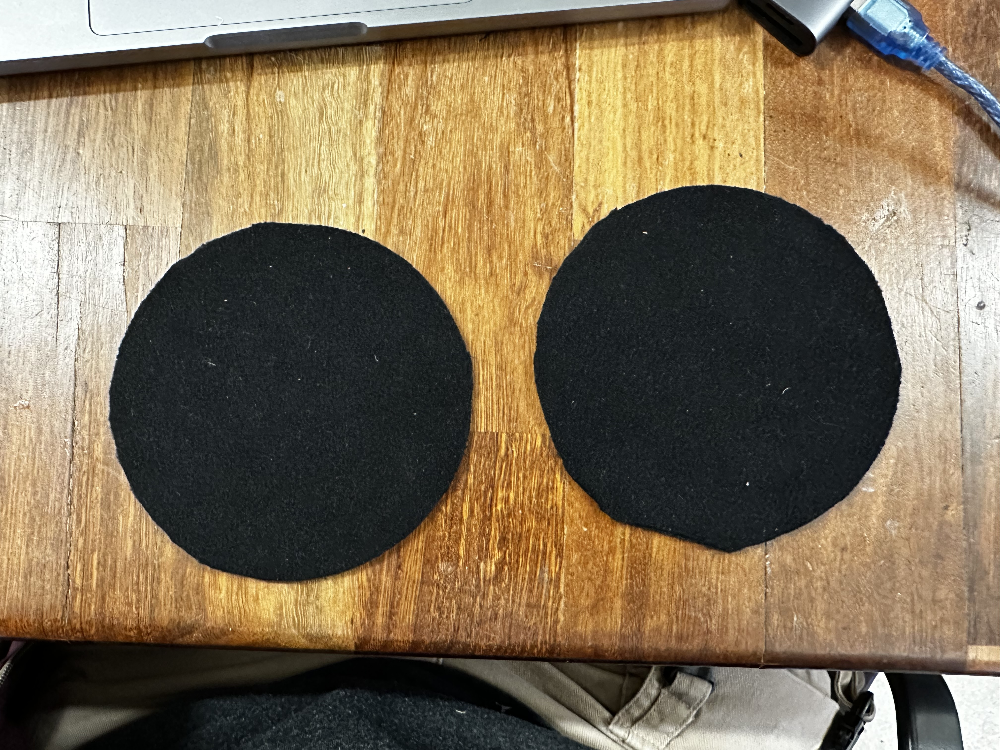
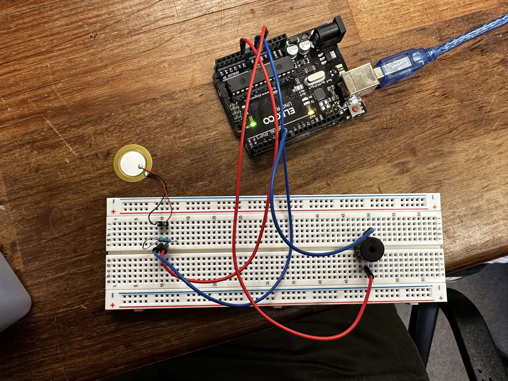
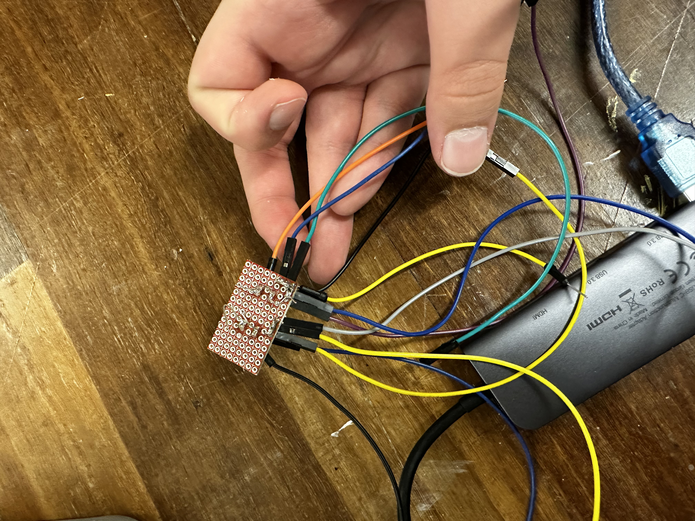
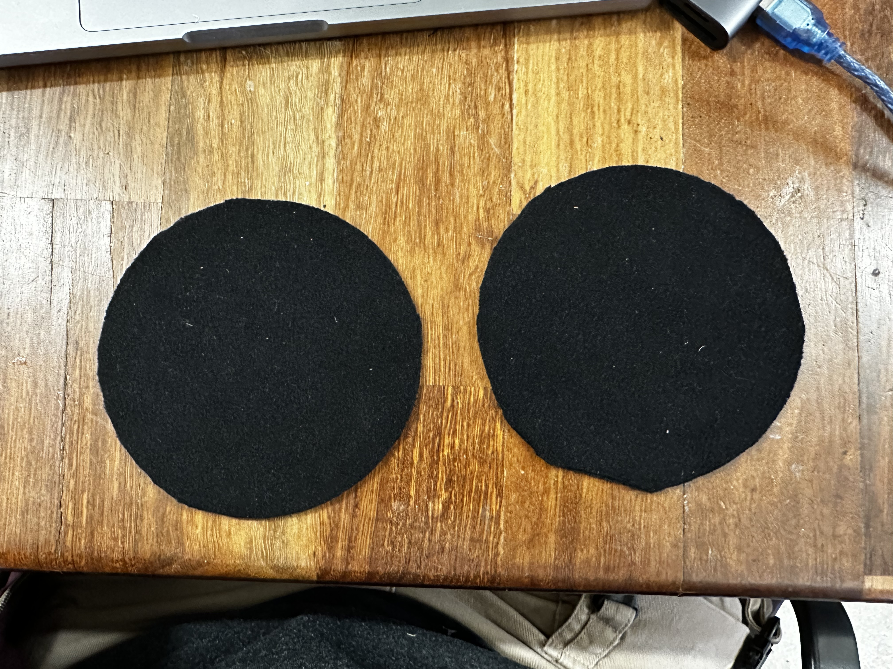
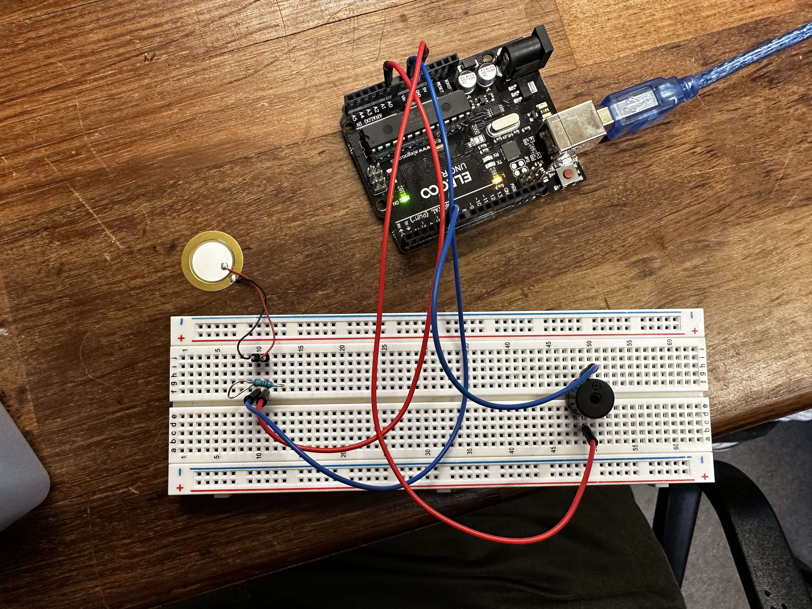
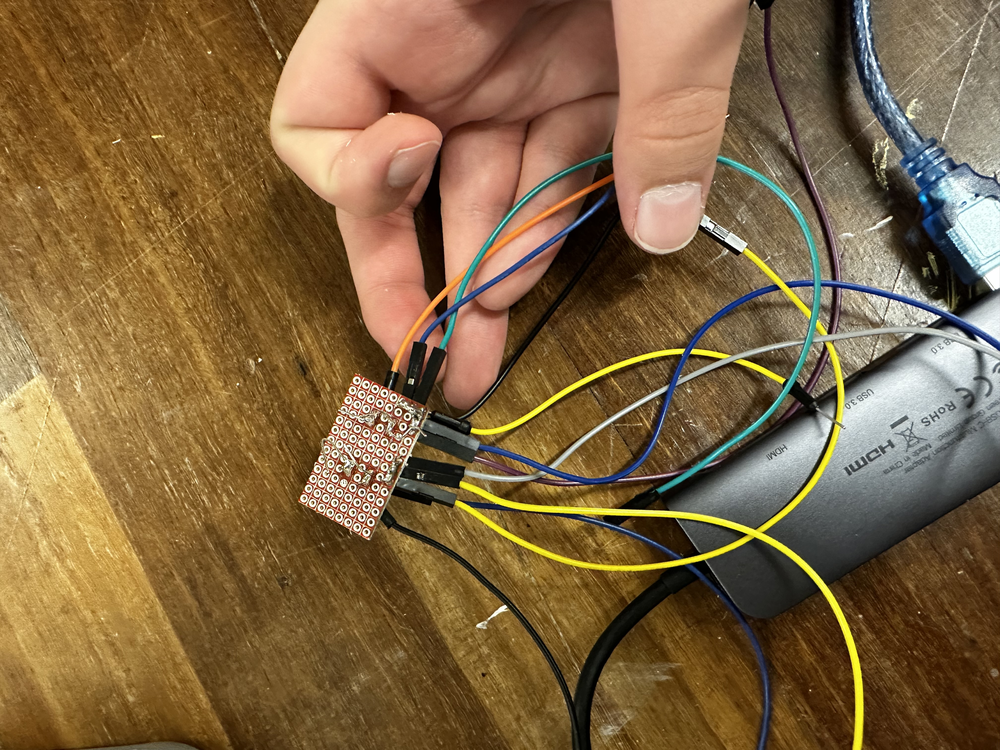
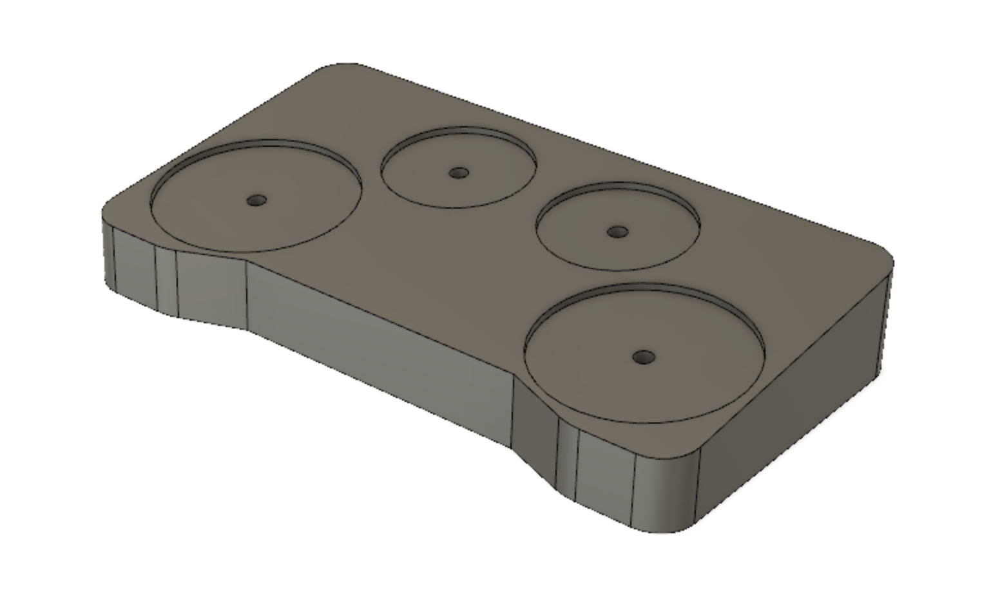
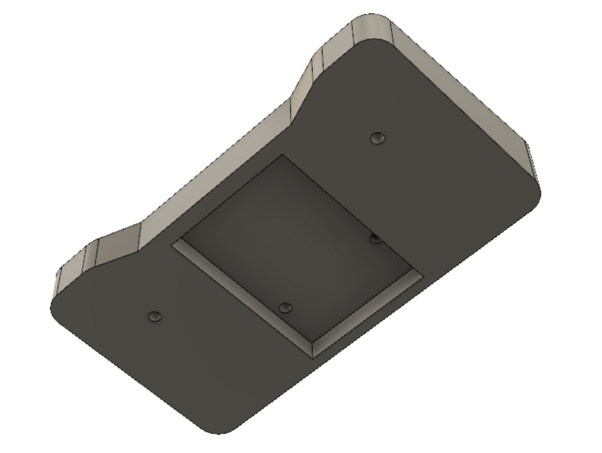

For our final project my team built an electronic drum pad. The system consists of two drum pads, the right one being for kick, and the left for snare. There are also two knobs present on the face of the device. The left knob is responsible for controlling the volume of outputted sound, while the right knob changes the sound profile of the drums. All the electronics are housed within a wooden enclosure which is connected to the computer via a wire which passes through a specifically routed hole. Electronic drum machines tend to be fairly expensive, our design on the other hand is extremely cheap to build and can serve as a good introductory project for those interested in electronic drums. The main components in the electronic drum pad include two piezoelectric sensors, two potentiometers, and an Arduino microcontroller. The piezoelectric sensors are used to detect when the drum pads are struck, and the position of the potentiometers are used to change the sound. The Arduino microcontroller processes the sensor data and outputs to the serial monitor so that Processing can play the corresponding drum sounds. The device does not include a speaker as the drum sounds are outputted through the connected computer. One of the challenges we faced during the development of our electronic drum pad project was the programming aspect. The main issue we encountered was playing concurrent sounds using Arduino and Processing. Initially we were trying to make it work using just Arduino, and had planned to wire external speakers to output the sound to. After consulting with the TAs we decided to start using processing as it seemed more capable of playing concurrent sounds. It still gave us quite a lot of trouble, and didn’t work perfectly, but it was a valuable lesson in teamwork, as we had to work together to troubleshoot any issues and ensure that all aspects of the device were functioning properly. Ultimately there seemed to be a delay between when the drum pad made contact with the stick, and when the sound was played. We had originally intended to fabricate the wooden enclosure using a CNC machine. However, once we learnt the BTU lab’s CNC machine was broken, we were forced to shape the wood by hand. We started by cutting out the general shape of the device using a jigsaw, and sanded the piece into shape using a belt sanding machine. We then used a palm router and a drill to mill the necessary space to fit the two drum pads, potentiometers, and circuitry. The drum pads were constructed using CDs which were glued to piezo sensors and wrapped in black fabric. Overall, our electronic drum pad project was a success. We were able to create a functional, affordable, and aesthetically pleasing device that can be used by beginners and experienced drummers alike. With some modifications and improvements, this project has the potential to be a great starting point for those interested in pursuing electronic drumming as a hobby or profession.
 





Below are two screenshots from the CAD model for the enclosure.
 